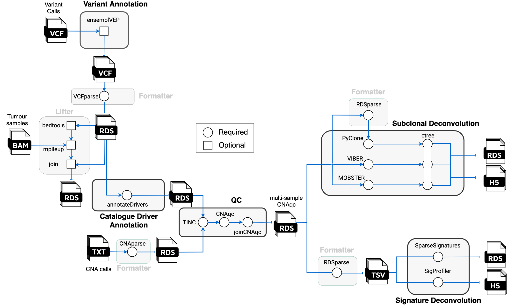

Tumour evolution from WGS data


Introduction
nf-core/tumourevo is a bioinformatics pipeline to model tumour evolution from whole-genome sequencing (WGS) data. The pipeline performs state-of-the-art downstream analysis of variant and copy-number calls from tumour-normal matched sequecing assays, reconstructing the evolutionary processes leading to the observed tumour genome. This analysis can be done at the level of single samples, multiple samples from the same patient (multi-region/longitudinal assays), and of multiple patients from distinct cohorts.
The pipeline is built using Nextflow, a workflow tool to run tasks across multiple compute infrastructures in a very portable manner. It comes with docker containers making installation trivial and results highly reproducible. The Nextflow DSL2 implementation of this pipeline uses one container per process which makes it easier to maintain and update software dependencies. Where possible, these processes have been submitted to and installed from nf-core/modules in order to make them available to all nf-core pipelines, and to everyone within the Nextflow community!

Pipeline Summary
- Quality Control (
CNAqc,TINC) - Variant Annotation (
VEP,maftools) - Driver Annotation (
SOPRANO,dndsCV) - Subclonal Deconvolution (
PyClone,MOBSTER,VIBER) - Clone Tree Inference (
ctree) - Signature Deconvolution (
SparseSignatures,SigProfiler) - Genome Interpreter
Quick Start
i. Install nextflow
ii. Install either Docker or Singularity for full pipeline reproducibility (please only use Conda as a last resort; see docs)
iii. Download the pipeline and test it on a minimal dataset with a single command
nextflow run nf-core/tumourevo -profile test,<docker/singularity/conda/institute>
Please check nf-core/configs to see if a custom config file to run nf-core pipelines already exists for your Institute. If so, you can simply use
-profile <institute>in your command. This will enable eitherdockerorsingularityand set the appropriate execution settings for your local compute environment.
iv. Start running your own analysis!
nextflow run nf-core/tumourevo -profile <docker/singularity/conda/institute> --reads '*_R{1,2}.fastq.gz' --genome GRCh37
See usage docs for all of the available options when running the pipeline.
Documentation
The nf-core/tumourevo pipeline comes with documentation about the pipeline, found in the docs/ directory:
- Installation
- Pipeline configuration
- Running the pipeline
- Output and how to interpret the results
- Troubleshooting
Credits
nf-core/tumourevo was originally written by Nicola Calonaci, Elena Buscaroli, Katsiaryna Davydzenka, Giorgia Gandolfi, Virginia Gazziero, Asad Sadr, Lucrezia Valeriani and Giulio Caravagna.
Contributions and Support
If you would like to contribute to this pipeline, please see the contributing guidelines.
For further information or help, don't hesitate to get in touch on Slack (you can join with this invite).
Citation
You can cite the nf-core publication as follows:
The nf-core framework for community-curated bioinformatics pipelines.
Philip Ewels, Alexander Peltzer, Sven Fillinger, Harshil Patel, Johannes Alneberg, Andreas Wilm, Maxime Ulysse Garcia, Paolo Di Tommaso & Sven Nahnsen.
Nat Biotechnol. 2020 Feb 13. doi: 10.1038/s41587-020-0439-x.
ReadCube: Full Access Link